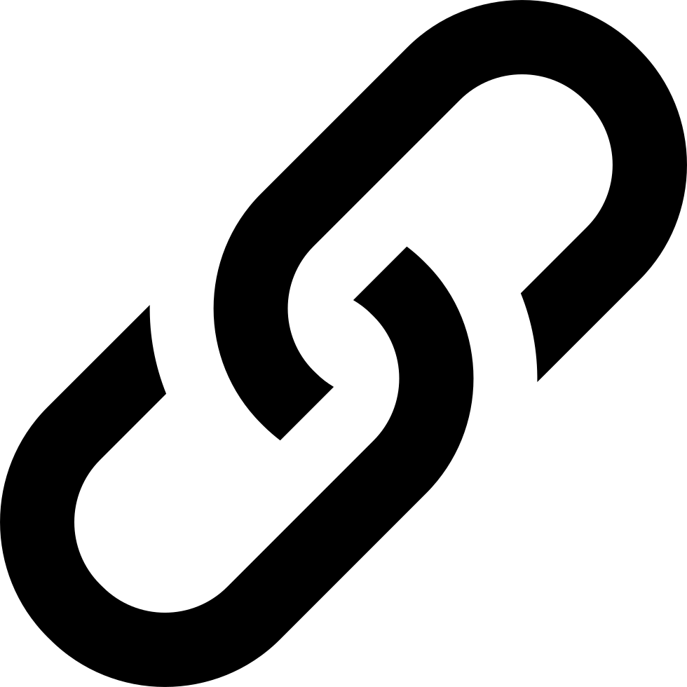

Book of Kells
Het boek is geschreven rond 800 door monniken. Het werd een meesterwerk genoemd, mede door de tien paginagrote afbeeldingen als de versierde hoofdletters en kleine illustraties door de tekst heen.

Gutenberg Bijbel
De boekdruk techniek werd rond 1430 uitgevonden door Johannes Gutenberg. Hij was een edelsmid en maakte gebruik van los gesmeden letters in combinatie met inkt om op een snellere en goedkopere manier boeken te repliceren. De Gutenbergbijbel was het eerst gedrukte boek.
Hyperlinks
Uitgevonden door Ben Schneiderman in 1980. Zonder hyperlinks zou de manier waarop we vandaag de dag met apparaten omgaan niet mogelijk zijn. De ooit embedded menu genoemd zorgt voor de mogelijkheid om tussen verschillende pagina's op een website of document te navigeren in plaats van alles af te moeten gaan.
WWW
Tim Berners-Lee ging in de lente van 1989 verder aan de slag met de hyperlinks en werd de grondlegger van het World Wide Web. Hij maakte het uiteindelijk open source waardoor het nu door iedereen wereldwijd gebruikt kan worden en een belangrijk onderdeel van de samenleving is geworden.

HTML
Ontwikkeld in 1990. De eerst gebruikte taal was SGML of Standard Generalized Markup Language. Hierna kwam HTML of Hyper Text Markup Language. Het is een taal waarmee websites opezet kunnen worden.

CSS
CSS of Cascading Style Sheets. Hiermee kan een HTML website verder aangekleed worden. De HTML is te zien als het skelet van een pagina en de CSS als de opmaak.

JavaScript
Eerst heette JavaScript Mocha, later LiveScript en uiteindelijk werd het JavaScript. Hiermee kan in combinatie met HTML en CSS compleet gemaakt worden door interactie toe te voegen.

Smartphone
Het eerste toestel wat commerciëel verkocht werd en technisch gezien een smartphone genoemd werd kwam uit in 1992. Deze telefoon ziet er heel anders uit dan de smartphones die we tegenwoordig gewend zijn. in 2007 kwam LG met de Prada telefoon, een telefoon met een groot capacatief scherm en al dichter bij de standaard van nu. Toch is voor veel mensen de iphone die later in 2007 uitkwam het begin van het smartphone tijdperk.